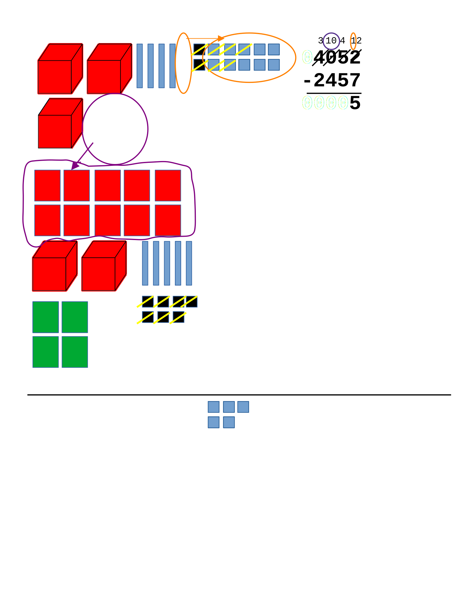

Lets subtract \(4052-2457\text{.}\) We first write the numbers aligned vertically, and view each number in terms of place value blocks:

Now lets subtract the rightmost place. Note that the top 2 is smaller than the bottom digit, so we must borrow. The the place directly to the left has a non-zero top digit, so we regroup 1 of this place (tens) to make 10 of our current place (ones) and thus decrease the digit in that place by 1. Now we have \(2+10=12\) ones and we do the subtraction \(12-7=5\text{.}\)
Now we move to the next place to the left; the tens place. Note that the top digit is now a 4, so it is smaller than the bottom digit 5. So again, we must borrow.
We have a zero immediately to the left of the (what was a 5 but is now a) 4, so we move to the left one more time (to the thousands place) since there is a non-zero digit in the top number there. We borrow one thousand, thus decreasing the thousands digit by 1 and increasing the hundreds by 10.

Then we ungroup that into 9 hundreds and 10 tens. In our calculation, this means changing the zero in the hundreds place in the top number to a 9, and the 4 in the tens place to a 14.
Now we have 14 tens and we do the subtraction in the tens column \(14-5=9\) . Similarly, the top number in the hundreds and thousands place is smaller so we do those subtractions as well: \(9-4=5\) and \(3-2 = 1\) respectively.
As we have no non-zero digits to the left of the thousands place, we are finished and we know \(4052-2457=1595.\)